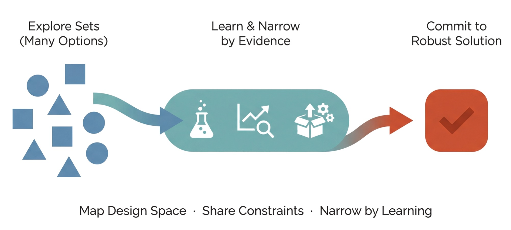
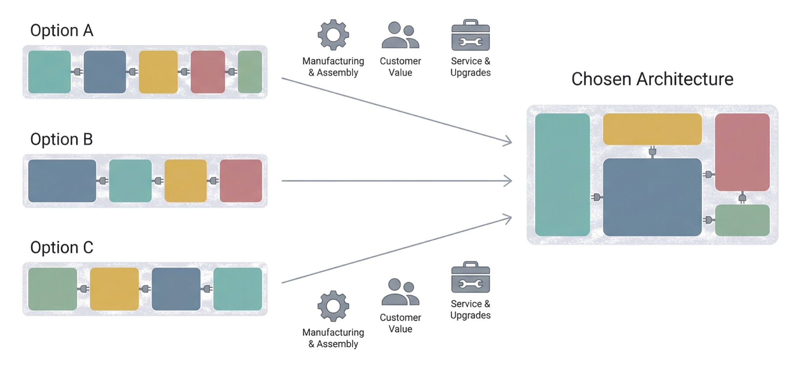
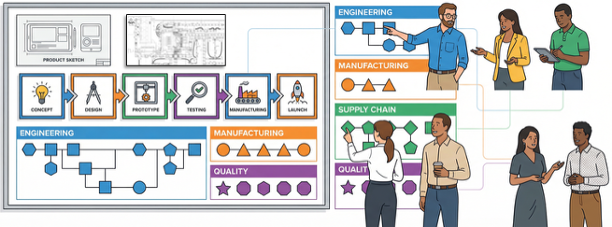
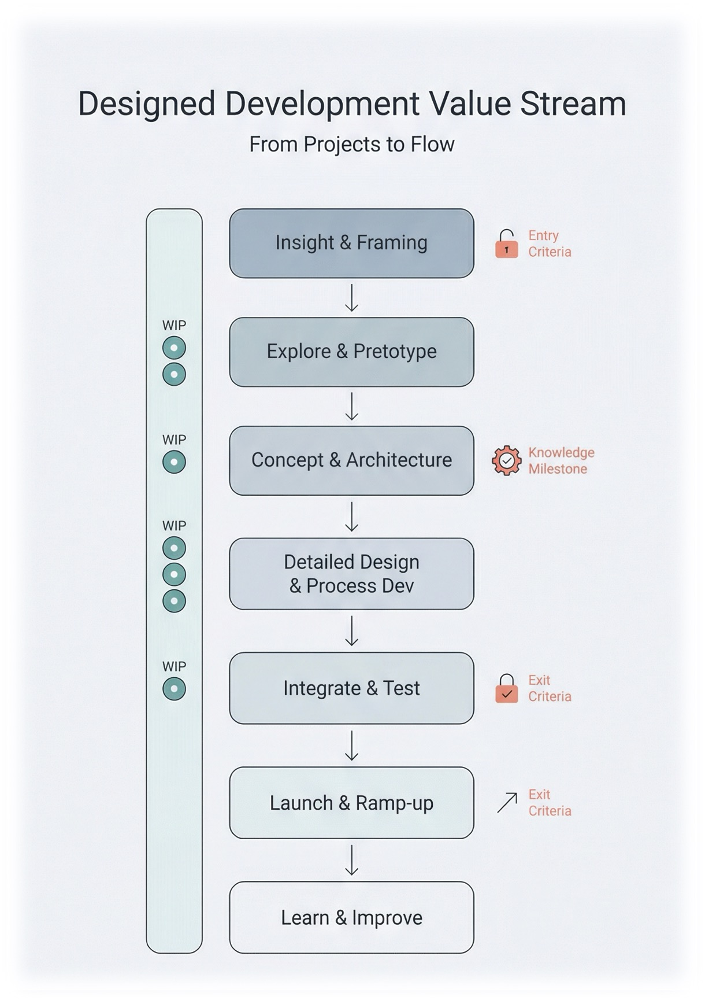
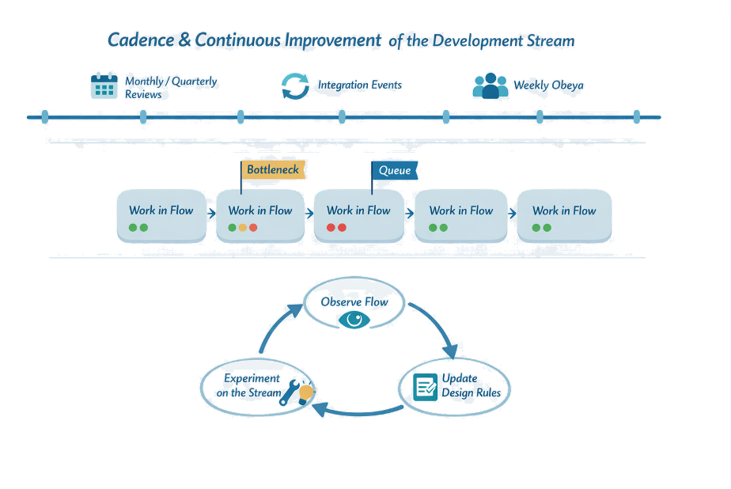
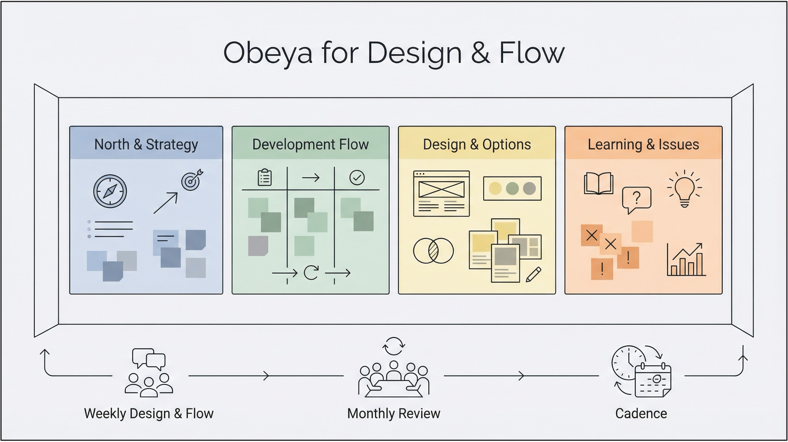
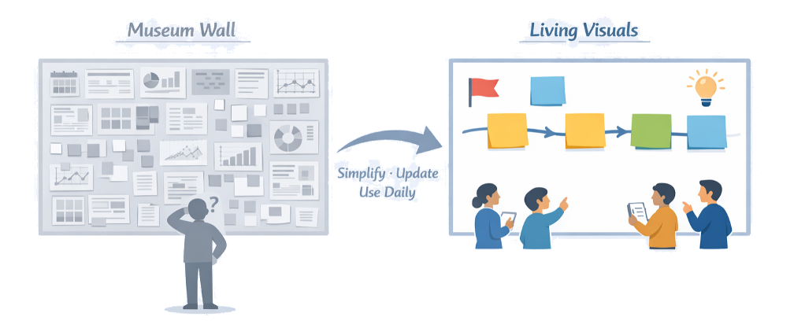
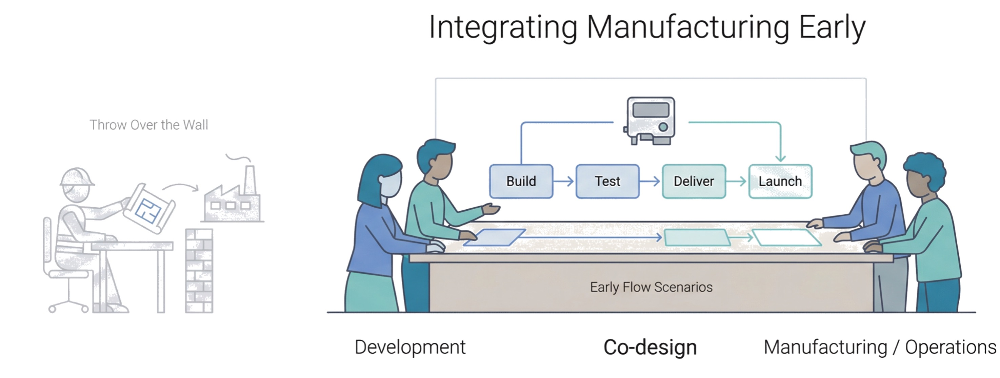
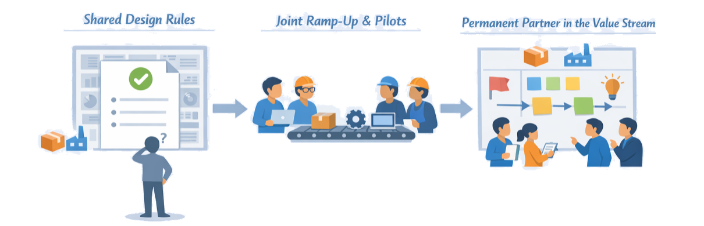

Chapter 5
Turning Insight into Design and Flow
Chapters 3 and 4 helped clarify where to play and what problems and contexts matter. Chapter 5 turns that insight into how we design — both the product and the development system — so that value can actually flow.
In LPPD, design is not a single decision or a hand-off; it is a set-based, learning-driven process where multiple options are explored, knowledge is built systematically, and commitments are made only when feasibility is proven. In parallel, the development value stream is designed to support that learning — with clear cadence, limited WIP, and visual management so teams can work concurrently instead of in stop-start bursts.
"Given what we now know about customers and context, how should we design our product, our process, and our development flow differently?"
Section 5.1
Set-Based Concurrent Engineering
SBCE is the default design approach in LPPD: instead of picking one solution early and fixing it later, teams keep multiple options alive, learn quickly, and narrow the set based on knowledge. This reduces late changes, exposes trade-offs earlier, and lets product and process be designed together more robustly.
Traditional development chooses a single "best" concept early, then spends months adjusting it as new information appears. SBCE assumes early knowledge is incomplete and treats early decisions as hypotheses to explore, not final answers.
Three Core Principles of SBCE
Principle 1
Map the Design Space
Start by describing a range of possibilities — sets of concepts, parameter ranges, process alternatives — rather than a single point. Represent options visually so the team sees the full space.
Principle 2
Communicate Constraints
Functions share what is feasible or infeasible as constraint bands (e.g., "weight between X and Y", "cycle time < Z"). Overlaps between these bands reveal feasible regions where good designs can live.
Principle 3
Narrow by Learning
Plan small experiments, analyses, or prototypes aimed at ruling out options and refining constraints. Remove options only when evidence shows they are inferior or infeasible — and record why for future reuse.
Sets exist at multiple levels: concept sets (different architectures or flow principles), parameter sets (ranges for key dimensions, power, takt time), and process sets (alternative routes or test strategies). Visually, sets might be option trees, families of curves, or bands on simple graphs.

When (and How) to Commit
SBCE does not avoid commitment — it delays commitment until the team has enough knowledge to make a robust decision. Commitment is tied to clear evidence that remaining options are inferior or infeasible, confidence that constraints are well understood and stable, and alignment with value stream targets (cost, lead time, manufacturability, serviceability).
At that point, the set converges to a narrower band or single solution, and work shifts from exploring to detailing and implementation.
Section 5.2
Architectures, Interfaces, and Modularity
Set-based thinking is most powerful when applied to architecture and interfaces, because early structural decisions lock in most of a product's lifecycle cost, complexity, and manufacturability. LPPD uses architecture work to balance customer variety, technical feasibility, and production flow — often through modular designs and well-defined interfaces.

Architecture is the way functions and components are arranged and connected — for both product and process. A good architecture makes it easier to offer variants, reuse modules, and evolve the design without constant rework. A poor architecture creates hidden coupling, late integration issues, and complexity in manufacturing and service.
Working with Module and Interface Sets
Instead of locking into one module breakdown or interface design, LPPD teams keep sets of options while they learn:
- Module sets: alternative ways to group functions — evaluated for customer value, manufacturability, assembly effort, and variant flexibility.
- Interface sets: different interface concepts between modules (mechanical, electrical, software, data) — compared on robustness, assembly simplicity, automation potential, and upgradeability.
Teams make these sets visible as simple block diagrams with alternative module cuts and interface codes, gradually narrowing as knowledge about customer needs, production, and service accumulates.
Design for Flow: Manufacturing in the Room

LPPD architecture work explicitly includes manufacturing and assembly perspectives from the start, not as late DFM checks. Use structured heuristics (ease of assembly, automation readiness, test access, service access) when evaluating module and interface sets. Sketch simple assembly and test flows for each architecture option to see which will support smoother production value streams.
An architecture obeya makes SBCE practical: large block diagrams for the leading architecture options, with small tags for customer value, manufacturing impact, and service implications, plus boards showing open questions and knowledge gained.
Section 5.3
Designing the Development Value Stream
In LPPD, the development process is not an invisible backdrop — it is designed and improved just like the product. The development value stream describes how ideas become launched, supported products and processes, including all major steps, decisions, and learning loops. Designing this stream means making intentional choices about sequence, WIP, ownership, and cadence so that learning and delivery can flow.

A typical backbone might include: Insight & Framing → Explore & Pretotype → Concept & Architecture → Detailed Design & Process → Integrate & Test → Launch & Ramp-up → Learn & Improve. The goal is not a rigid stage-gate, but a shared mental model of where teams are, what good looks like, and what knowledge they need before moving on.
Designing for Flow, Not Busyness
A healthy development value stream has smooth flow of work and knowledge, not constant overload. You're aiming for "fewer things, finished better and faster" — not "more things started."
- Limit WIP: decide how many significant bets each value stream can run concurrently and stick to it. This protects focus and reduces multi-tasking.
- Stable teams: keep cross-functional teams stable around value streams rather than constantly re-staffing around projects.
- Clear entry and exit criteria: for each stage, define what knowledge and artefacts must exist before work moves forward — e.g., validated brochure, architecture options explored, integration plan agreed.
Cadence and Integration Events

Flow in development relies on cadence — regular beats where information is synchronised and decisions are made. Cadence provides predictability and natural points to inspect the value stream, adjust WIP, and re-prioritise.
- Regular integration events (e.g., every 4–6 weeks) where product, process, and test work are brought together in tangible form — simulation, prototype, demo, or pilot.
- Aligned cadences between discovery, design, process engineering, and suppliers to reduce waiting and rework.
- Knowledge-focused reviews: "What did we learn? What can we now decide? What remains uncertain?" — not just schedule checks.
Section 5.4
Visual Management & Obeya for Design & Flow
Complex LPPD work needs a shared place where everyone can "see the game." Visual management and obeya provide that place — making strategy, options, decisions, risks, and flow visible so cross-functional teams can coordinate without endless status meetings.
In development, most problems are invisible: unclear decisions, hidden queues, knowledge gaps. Traditional tools scatter information and slow down learning. An obeya brings critical information together in one visual environment.

Making visuals lightweight and useful: use large, simple visuals — hand-drawn sketches, sticky notes, big markers. Limit what is on the walls to what you look at regularly. When a card or area hasn't moved in weeks, that's a signal: either unblock it or remove it. A good test: someone walking in for the first time should understand within five minutes what you're trying to achieve, what you're working on, and where you're stuck.
Core Walls in a Design & Flow Obeya

Wall 1
North & Strategy
True North and key value streams. Current target conditions and annual objectives. Link to the main bets in the portfolio.
Wall 2
Development Value Stream & Flow
The designed development value stream. Active bets plotted along the stream, showing current stage and next knowledge milestone. WIP limits, queues, and simple status signals.
Wall 3
Design & Options
Set-based options for product and process — architectures, module splits, process routes. Key experiments and analyses in progress. Open questions and decisions needed.
Wall 4
Learning & Issues
Recent discovery insights and experiment results. Major issues and blockers with owners. Agreed countermeasures and follow-up checks.
Rhythm and Roles in the Obeya
Visuals only help if people use them regularly. Define a simple rhythm and clear roles:
- Weekly design & flow meeting (30–60 min): core team reviews flow and design/options walls, updates status, agrees next experiments and integrations.
- Bi-weekly or monthly broader review: leaders and supporting functions join, focusing on decisions, escalated issues, and alignment with strategy.
- Obeya owner/facilitator: keeps visuals current, timeboxes discussions, ensures follow-up.
- Chief engineer or equivalent: connects decisions back to customer value and system performance.
Section 5.5
Integrating Manufacturing & Operations Early
Designing great products is not enough — LPPD aims to design products and production systems together so value can flow smoothly from development into stable operations. Bringing manufacturing, supply chain, and service in early reduces late changes, shortens ramp-up, and avoids pushing problems downstream under time pressure.
From "Throw Over the Wall" to Co-Design

The traditional pattern — development "finishes" the design, then hands it to manufacturing — creates late design changes when real-world constraints surface at ramp-up, complex workarounds on the shop floor, and friction between engineering and operations.
In LPPD, operations partners are involved from concept onward as co-designers. They help shape architectures, modules, and process concepts to support flow, quality, and safety from day one, rather than trying to "lean out" whatever they receive later.
Early flow scenarios: rather than waiting for detailed designs, teams sketch rough layouts or swim lanes of assembly, test, and logistics steps; alternative concepts for where work happens; and early thinking about takt, batching, and automation levels. These scenarios are treated as sets of process options, evaluated alongside product options.
Joint Ramp-up Planning and Permanent Partnership

LPPD treats ramp-up as part of development, not an afterthought. Cross-functional teams plan product and process ramp-up together — defining readiness criteria for both design and production before each step, planning pilots and pre-series builds as learning events, and using feedback to refine both product details and production methods before full release.
- Stable representation from manufacturing, logistics, and service in value stream and obeya routines — not just "per project" invitations.
- Regular gemba in both development and production so teams see each other's reality.
- Shared metrics where success is measured in overall flow, quality, and lifecycle performance — not just local efficiency.
When operations and development share goals, routines, and learning, "design for flow" becomes the natural way of working rather than a special initiative.